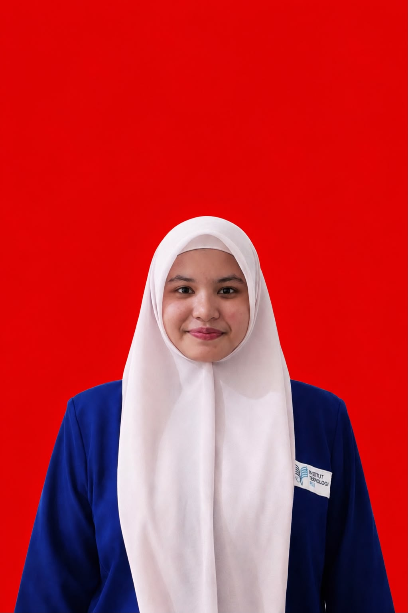

Institut Teknologi PLN
Bachelor’s Degree in Informatics Engineering · Faculty of Energy Telematics
INFORMATICS ENGINEERING STUDENT
Institut Teknologi PLN · Class of 2025
I am an Informatics Engineering student at Institut Teknologi PLN with an interest in technology and programming. I am developing my skills in programming, computer networks, and information systems. I enjoy learning new things, take responsibility for my work, and work well in a team.
GPA 3,74
View Experience
PROFILE
I am pursuing a Bachelor’s degree in Informatics Engineering at the Faculty of Energy Telematics, Institut Teknologi PLN. I aim to strengthen my technical knowledge, gain practical experience, and contribute to activities and projects related to information technology.
ACADEMIC BACKGROUND
Bachelor’s Degree in Informatics Engineering · Faculty of Energy Telematics
Senior Secondary Education
Junior Secondary Education
Primary Education
ORGANIZATIONS & COMMITTEE EXPERIENCE
Public Relations Coordinator
Coordinated communication and information sharing during HIMAKA election activities.
Public Relations Coordinator
Supported event communications, information distribution, and coordination with participants and invited guests.
Public Relations Staff
Helped distribute event information and coordinate with guests and committee members.
Public Relations Staff
Supported communications and publicity for the seminar.
Public Relations Staff
Helped communicate and share information about community service activities.
Foreign Affairs Department
Participated in HIMAKA organizational activities.
SKILLS
CERTIFICATIONS & TRAINING
GET IN TOUCH
Feel free to contact me about academic collaboration, student activities, or opportunities to learn together.
Emailsyifamusliadi17@gmail.com
Phone Number+62 822-1927-5239
GitHubgithub.com/syifaaisyi17 ↗
Instagram@syifrhdtul_ ↗